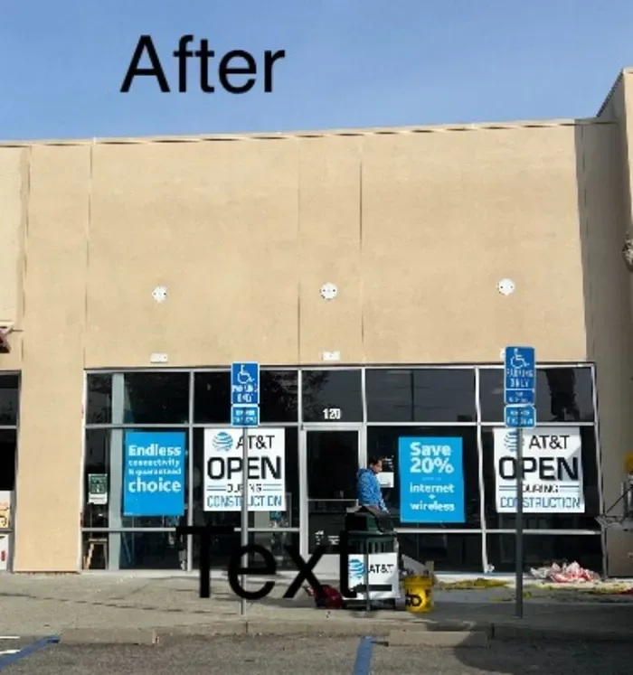
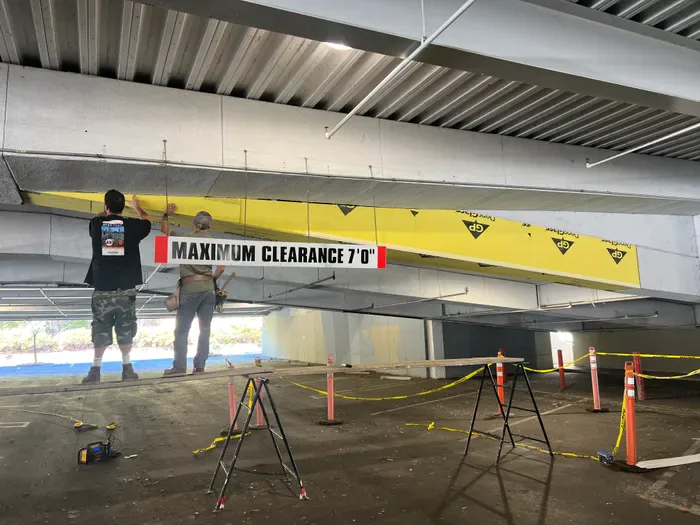
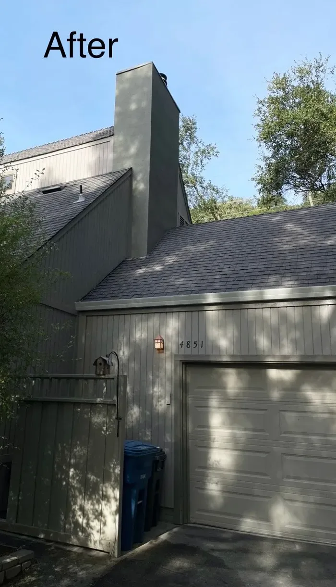
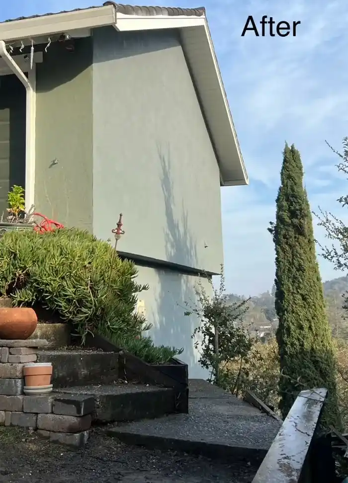
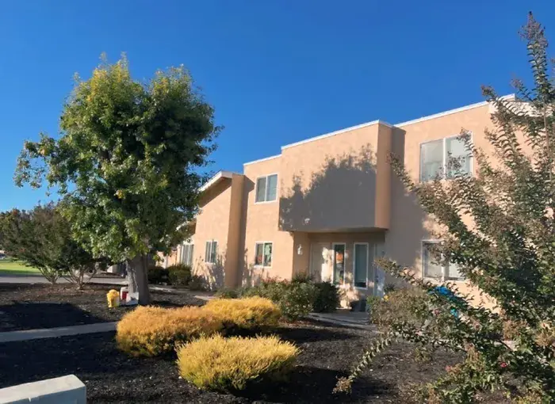
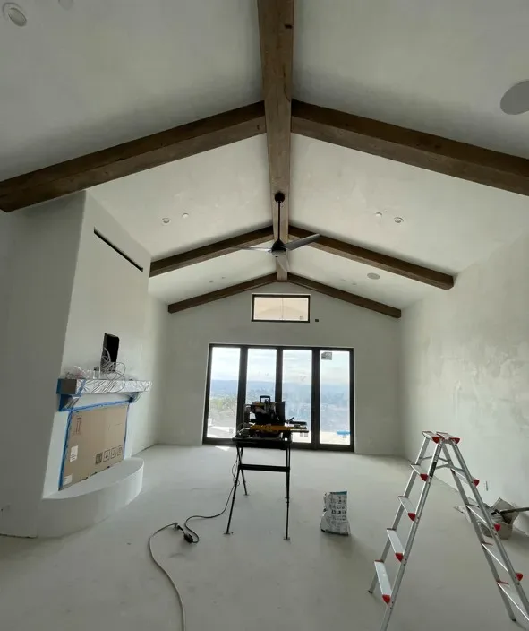
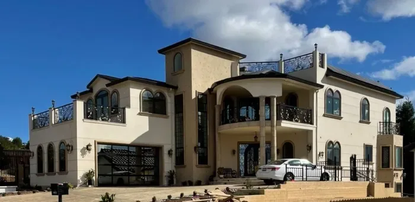
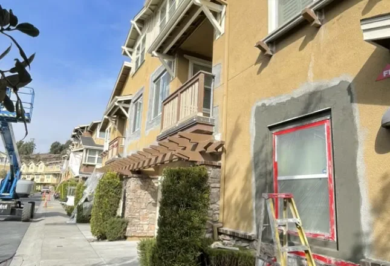

Every project starts with what was wrong.
Documented corrections from across the Bay Area — the failure we found, the work that fixed it, and the wall that’s still dry. Commercial first; the diagnostic standard is the same either way.
Retail, structures, and property-manager scopes.
Storefronts and structures where the schedule is tight and the leak can’t come back.

AT&T Store Commercial Facade Restoration
Severe water leaks were compromising the building’s structure, and the source wasn’t visible from the surface. The repair had to be right — a retail storefront can’t keep closing for the same leak.
Open case file →
Northgate Mall Parking — Metal Framing with Stucco
A newly installed structural steel beam at the mall’s parking structure stood out starkly against the existing finished beams. It needed to disappear into the architecture.
Open case file →Homes diagnosed, corrected, and finished to match.
From leak-driven repairs to whole-facade transformations — scoped to the actual problem.

Leaking Brick Facade Waterproofing
The brick facade was leaking, and the conventional quote for a problem like this is full removal — an enormous cost. The owner needed to know whether the structure could be saved.
Open case file →
Novato Residential Stucco Restoration
Invasive vines had penetrated cracks in the stucco and compromised the water barrier beneath. Left alone, the damage would have spread; quoted conventionally, it meant full stucco removal.
Open case file →
Residential Facade Transformation — Siding to Stucco
The home’s original siding had aged out — and the owners wanted a sleeker, more durable exterior that would also upgrade the home’s weather protection.
Open case file →
Skyfarm Santa Rosa — Exterior Stucco & Interior Venetian Plaster
A full interior and exterior finish transformation — the exterior needed durable, weather-resistant stucco; the interior called for a luxurious, seamless plaster finish worthy of the property’s architecture and setting.
Open case file →
Wedgewood St Santa Rosa — Custom Exterior Finishes & Stonework
The homeowners wanted an exterior as individual as the home itself — multiple finishes and stonework details that most single-trade contractors can’t deliver under one roof.
Open case file →
Window Patching & Restoration
Weathering and structural concerns around the home’s window frames — the most common entry point for water in any stucco wall.
Open case file →Have a failure that needs a case file?
Describe the symptom — we’ll find the cause, document it, and scope the fix honestly.